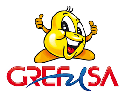
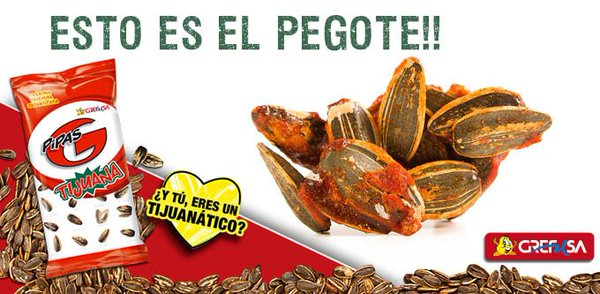

A5-Reglas
'Grefusa, Grefusa es un grupo empresarial español dedicado, principalmente, a la producción y distribución de snacks, patatas fritas y frutos secos. Su sede central está localizada en Alcira, en la provincia de Valencia.
Que son las Pipas Tijuana
Las Pipas G Tijuana son todo un clásico para el consumidor que adora el sabor umami. La cubierta de la semilla contiene una capa con un sabor bastante peculiar. El sabor de esta cubierta podría definirse como salado, dulce y umami. Y es que contiene potenciadores de sabor para aumentar ese placer a nuestro paladar.
Que tiene las pipas tijuana
Semillas de girasol (90%), sal, azúcar, levadura inactiva, proteína de SOJA hidrolizada, proteína de maíz hidrolizada, LACTOSA, potenciadores del sabor(glutamato de monosodio, 5'ribonucleotidos de disodio), maltodextrina de TRIGO, maltodextrina de maíz, aromas (TRIGO, CEBADA Y LECHE), ajo en polvo, jalapeño en polvo,
Y uno de los mayores gustazos concedidos este año ha sido asegurar que, ahora, haya muchos más pegotes en nuestros paquetes de Pipas Tijuana. ¡De nada.
Lo mejor de las Pipas Tijuana
Lo divertido es que si vamos a la web https://grefusa.com/ nos encontramos con el chat que se encuentra Batman, y nos propone unos cuantos acertijos. La web es también una broma interna de la película puesto que la pista de "el rata alada" es uno de los momentos más divertidos de la película, casi una broma de traductores con la que El pingüino se ríe de Gordon y Batman.
Ahora las Pipas G Tijuana tienen más bolas de pipas apelmazadas de salsa Tijuana por bolsa, los llamados 'pegotes'. Para anunciar esta novedad, la marca ha realizado una acción orgánica con influencers y ha organizado un concurso a través de Twitter e Instagram..